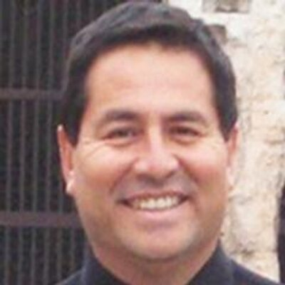

About Me

Born in Sacramento, California where I lived for 18 years before moving to San Diego, California. Attended Catholic Schools in Sacramento and later attended Southwest Coillege in Chula Vista, California. Joined the Marines where I served for 3 years. After leaving the Marines, I continue my studies at Southwest College and then Transfered to San Diego State University where I received a Bachelors in Computer Science in 1982.
My programming career started at Hughes Aircraft Company in Fullerton, California where I did real-time embedded software for digital a communication system. I worked at Hughes for 2 years before moving to a smaller company in Santa Monica, California where I also did embedded real-time software for small radars. In addition, I did some graphic animation work for missle simulators that were sold to Japanese Companies. This work lead me to study Japanese and travel extensively to Japan. I worked at companies like Mitsubishi Electric Company and Kawasaki Heavy Industries. This work really allowed me to get very competent in the Japanese Language and Culture.
To keep this short. I also did middleware for a Japanese Company called Open Environment Corporation using C, AS/400 and the UNIX operating system.
When I returned I did some work with a company in Manhattan Beach working with Japanese Printer Companies. Later I started my own Internet access and website development company and that is my work bio in a nutshell.
The other thing I enjoy is soccer which I play avidly and have coached youth teams for almost 30 years.